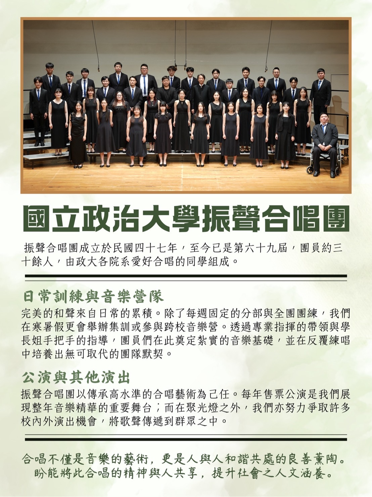

2027 NCCU Chen Sheng Chorus & Alumni Classic Choir California Visit and Concert Program政大振聲合唱團暨校友經典團 2027年美西巡演
- Date & time日期與時間
- January 16, 2027, 3:00 PM - 5:00 PM2027年1月16日, 3:00 PM - 5:00 PM
- Location地點
-
First United Methodist Church of Palo Alto
625 Hamilton Avenue, Palo Alto, CA 94301
This event invites the NCCU Chen Sheng Chorus and the Classic
Choir, composed of NCCU alumni, to conduct a cultural and
musical exchange tour in California, USA, in mid-January 2027.
The event, centered on concerts, alumni interactions, and
cultural sharing, combines formal performances with intimate
gatherings, aiming to promote cross-regional cultural
exchange.
Northern California Program Itinerary本活動邀請國立政治大學振聲合唱團及由政大畢業校友組成之經典合唱團，於
2027
年一月中旬赴美國加州進行文化與音樂交流巡演。活動以音樂會、
校友交流與文化分享為主軸，結合正式演出與溫馨聚會，期能促進跨地域之文化交流。
- January 14, 2027 — Visit San Francisco City Hall, museums and landmarks; meet with the Taipei Economic and Cultural Office in San Francisco.1/14/27 - 參觀舊金山市政府、博物館，名勝，拜會台北駐舊金山經濟文化辦事處
- January 15, 2027 — Visit prominent Silicon Valley companies; rehearsal.1/15/27 - 參訪矽谷知名企業、彩排
- January 16, 2027 — Concert (3:00 PM–5:00 PM)1/16/27 - 振聲經典音樂會（3 PM - 5 PM)
- January 17, 2027 — Visit prominent Bay Area universities; Celebration Luncheon with alumni and sponsors.1/17/27 - 參訪灣區知名大學、感恩慶祝/音樂雅集聯歡餐會
- January 18, 2027 — Drive south. Expected arrival in Southern California in the evening to continue the remaining four days of the program.1/18/27 - 驅車南行。預計傍晚抵達南加州繼續後四天行程。